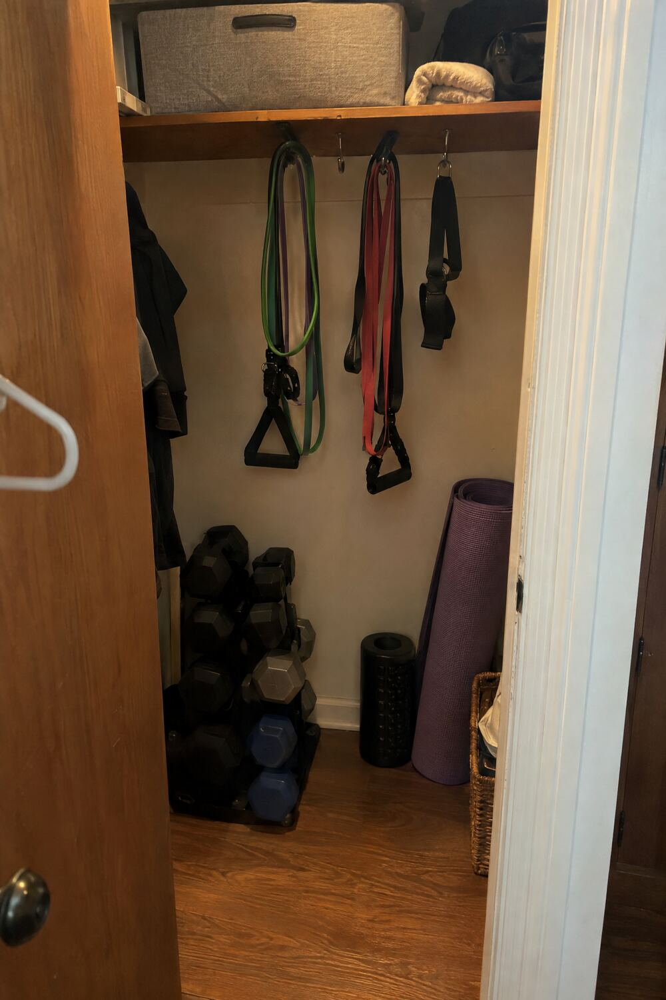
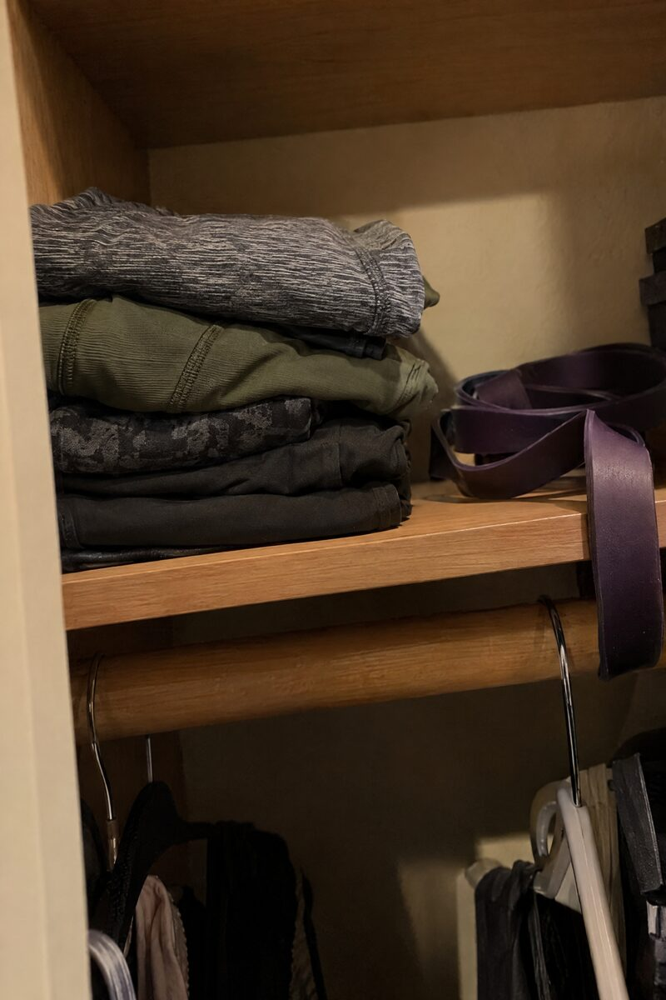
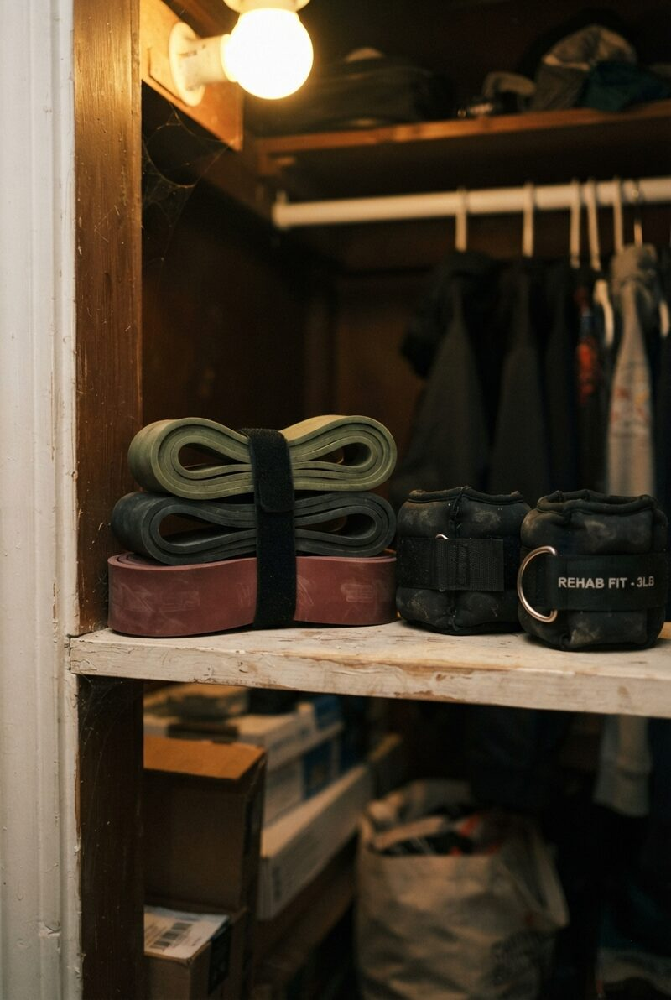
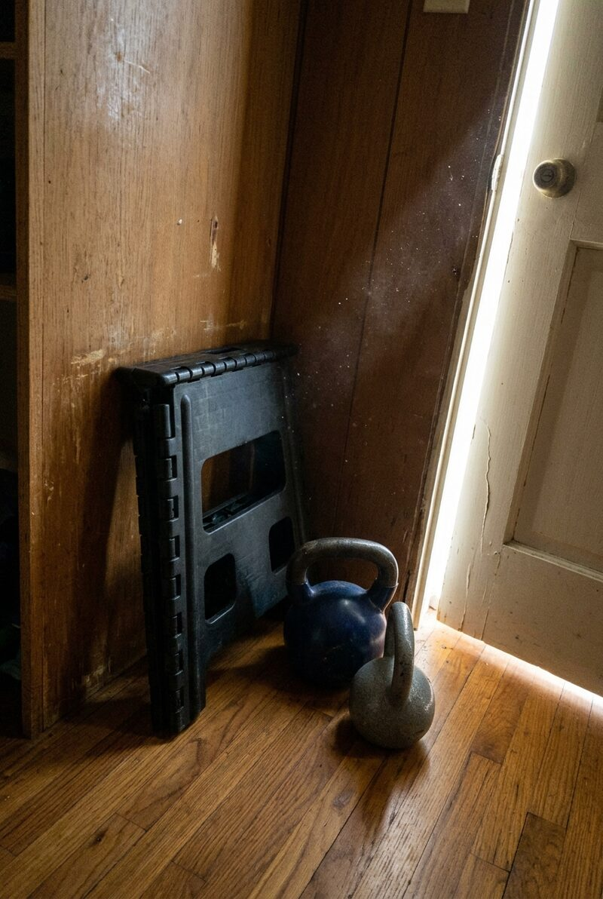
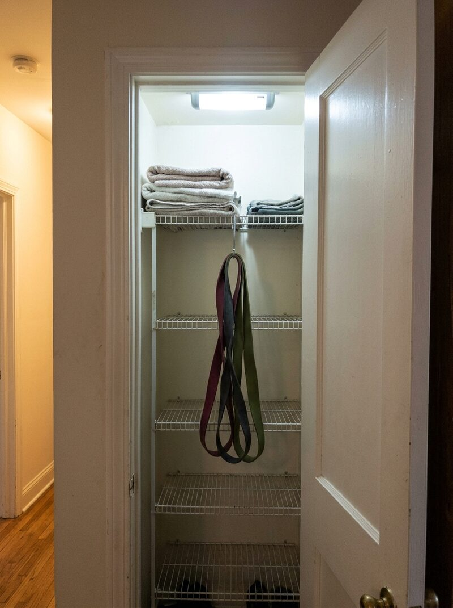
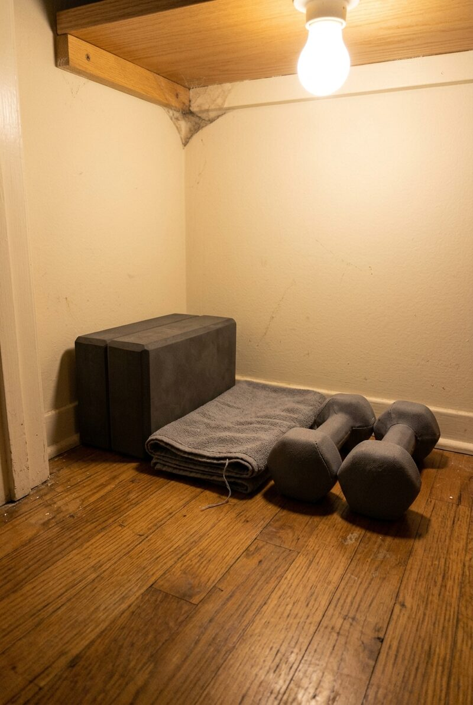
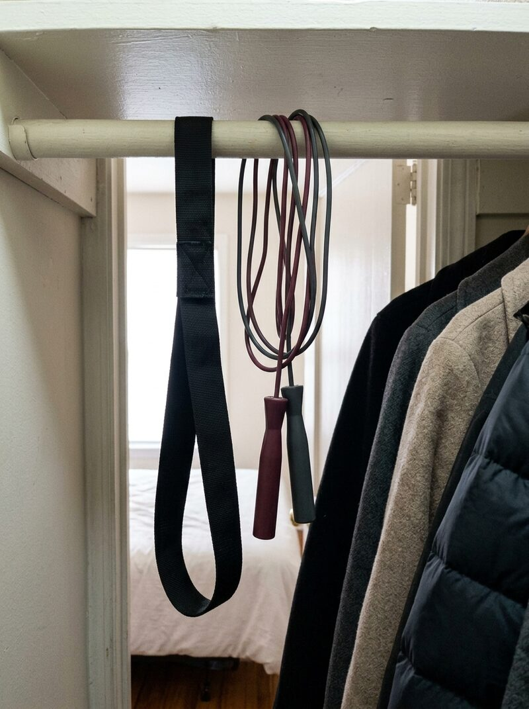
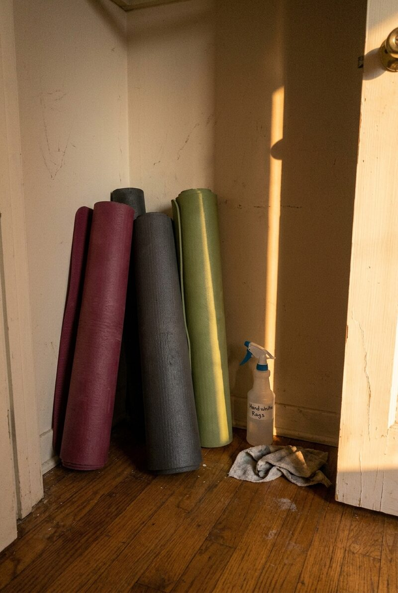
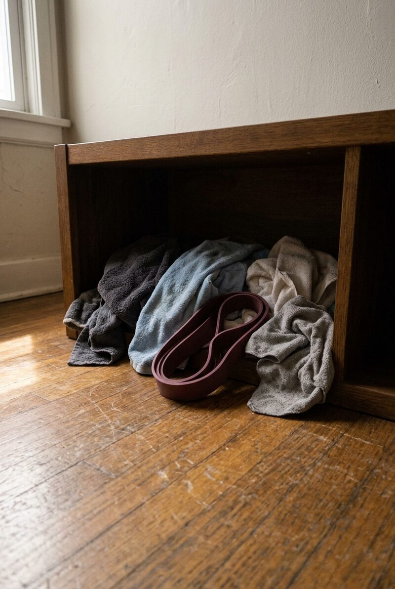

Look at your closet right now. There's probably a few feet of dead space under that hanging rod — more than enough for a hook set, a small dumbbell rack, and a mat standing in the corner. No shelving, no permanent install, nothing your landlord would ever notice. Shut the door and it's gone.

The shelf above your hanging rod is probably holding nothing but dust. Fold a few shirts to the side and there's room for a coiled resistance band on a single hook — no extra furniture, no extra floor space.

A full resistance band set and a pair of ankle weights fit on one shelf with room to spare. Keeping them stacked together means grab-and-go instead of hunting through a drawer.

Behind a closet door is dead space in almost every apartment. A folded step platform and two kettlebells tuck in here without blocking anything you actually use.

Wire shelving built for towels works just as well for folded workout gear, with a resistance band looped over the frame itself — no extra hook needed.

Sometimes the setup is this simple: a yoga block, a folded towel, and a pair of dumbbells in a bare corner. Nothing fancy, nothing in the way.

The space just under your hanging rod, next to the clothes, holds a suspension strap and a jump rope without crowding either one.

Three mats stored flat eat up a surprising amount of floor. Stood upright in a back corner, they take a fraction of the space and stay just as easy to grab.

Not every closet gym looks like a showroom. Towels and a band sitting exactly where they land after a workout is still a system — as long as you know where to look.